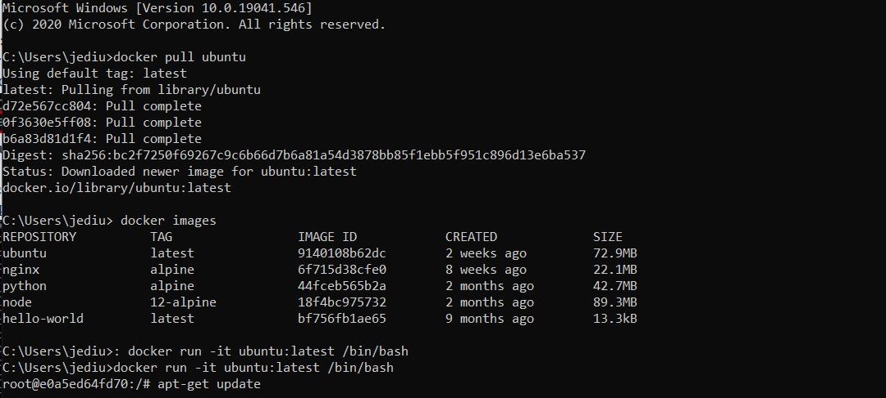
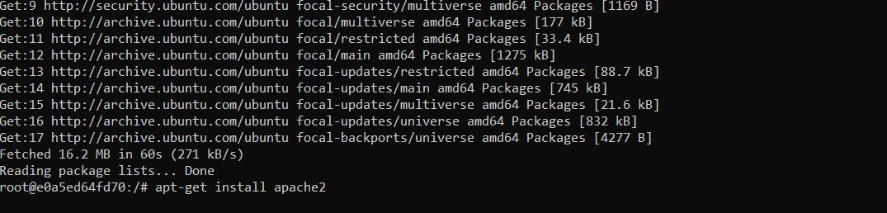
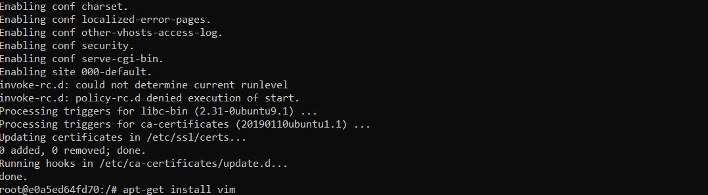
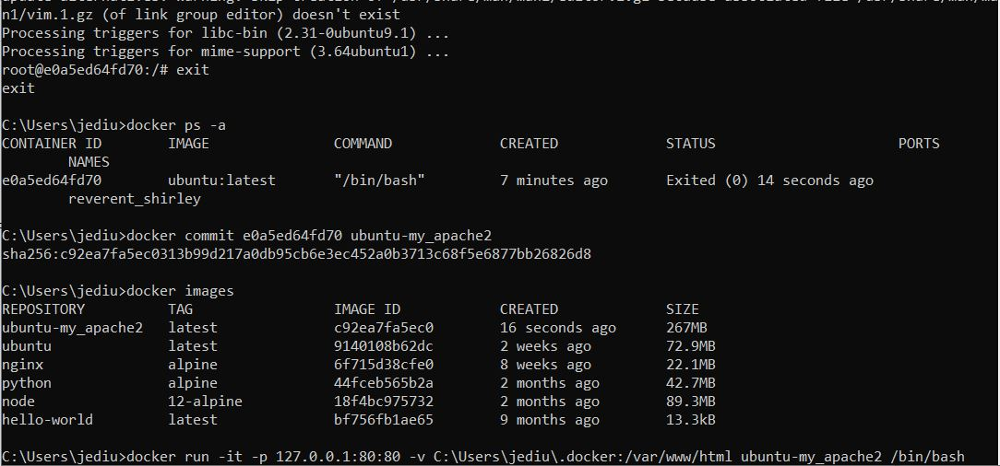
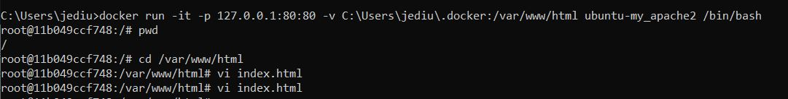
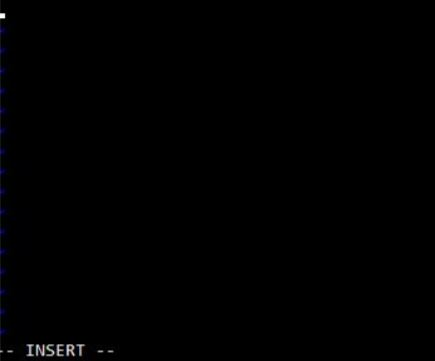
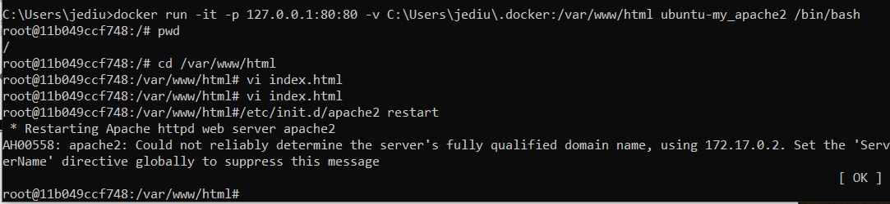

Linux In Container
In this tutorial we will learn how to use predefined environments (Docker) with some basic linux commands, as well as basic skills of the command line.
Docker
Many developers are struggling with the deployment of their programs. Sometimes it is easy to deliver a program, but to deliver the running environment for that program is not that easy. Docker is the delivery of environments, and we can also use these predefined environments to run specific programs, such as Ubuntu and Apache (a server end program). Docker is a sort of flexible “virtual machine”, providing the minimum environment for your programs, and the environment has little relationship with the host/local physical machine.
Install Docker to your PC
In this tutorial, I am going to install docker in Windows and Mac
Install Docker. The only component we have to install. Download the installer from the Windows, Mac download page and run it. After the installation, reboot the computer.
You can also refer Docker Tutorial for step by step method explaining how to install the docker version to your workstation.
To Get Started
In order to get started we have to pull the ubuntu image inside the commandline (windows), Terminal (linux).
1. Pull that image and run. Possible command: docker pull ubuntu
2. Use “docker images” to check existing Docker images on your computer.
3. Commit Changes To A Docker Image
Run the Ubuntu image to start a Docker container, then log into this Ubuntu container
Command: docker run -it ubuntu:latest /bin/bash
To install applications in linux container we can use the command apt-get update
To install the apache server inside linux container use the command apt-get install apache2
There may be various text editors used. But one of the most common used editor is vim. To install vim use the command apt-get install vim
After finishing the process we can type exit to close the ubuntu container.
We can commit the container to create the new container with pre-installed applications. In order to check the using command docker ps -a
We can create the docker image using the command docker commit [ContainerID] ubuntu-my_apache2
To check the docker image simply type docker images.
Data between container and host
We can use the command docker run -it -p 127.0.0.1:80:80 -v C:\Users\MyUserName\.docker:/var/www/html ubuntu-my_apache2 /bin/bash for windows
If we have to use for mac we can type docker run -it -p 127.0.0.1:80:80 -v ~/Users/MyUserName/.docker:/var/www/html ubuntu-my_apache2 /bin/bash
Vi editor
check the present working directory using pwd then go the html directory “/var/www/html” using cd /var/www/html
create an “index.html” file using vi index.html
Press i key to edit the new “index. Html” file.
, press the ESC> key of your computer then type :wq> to write the file and then quit vi
To start apache service type /etc/init.d/apache2 restart in your Docker container
These are some of the linux commands used to access and utilize the linux container in Docker.